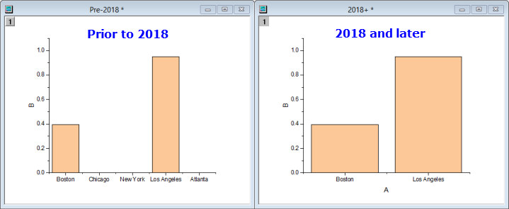

Datenfilter
Wks-DataFilter
Beschreibung
Origin bietet Datenfilter der drei Datenformate, Datum/Zeit, Numerisch und Text. Der Datenfilter könnte hinzugefügt, entfernt, aktiviert, deaktiviert oder erneut angewendet werden, indem auf die entsprechende Schaltfläche auf der Symbolleiste Worksheet-Daten geklickt wird, und mit den benutzerdefinierten Filterungsbedingungen angepasst werden.
Filterstatus
Wenn Sie einen Filter zu einer Spalte hinzugefügt haben, können Sie den Filterungsstatus über die Farbe des Filtersymbols des Spaltenheaders prüfen.
Datenfilter hinzufügen/entfernen
Um einen Datenfilter zu einer oder mehreren Spalten hinzuzufügen oder zu entfernen:
- Markieren Sie die gewünschte(n) Spalte(n).
- Klicken Sie auf die Schaltfläche Datenfilter hinzufügen/entfernen
 .
.
Wenn ein Datenfilter hinzugefügt wird, handelt es sich standardmäßig um einen leeren Filter, für den noch keine Filterungsbedingungen festgelegt sind. Sobald Filterungsbedingungen festgesetzt sind, wird der Filter automatisch nach der Filterbedingung benannt und das Filtersymbol wird vollständig mit grüner Farbe gefüllt.
Durch Klicken auf die Schaltfläche Datenfilter hinzufügen/entfernen auf einer ausgewählten Spalte mit einem angewandtem Filter wird der Filter entfernt. Das Gleiche geschieht, wenn Sie einen Filter aus dem Menü der Filtersymbole löschen.
- Die gewünschte(n) Spalte(n) mit Datenfiltern markieren.
- Auf das Symbol Filter klicken und Filter löschen im Kontextmenü wählen.
Wenn Sie Ihren Filter ein- und ausschalten möchten, ohne ihn zu verlieren, deaktivieren Sie den Filter (siehe nächstes Thema).
Datenfilter aktivieren/deaktivieren
Wenn ein Datenfilter hinzugefügt wird, ist es möglich, ihn durch Folgendes entweder zu aktivieren oder zu deaktivieren:
- Markieren Sie die gewünschte(n) Spalte(n).
- Klicken Sie auf die Schaltfläche Datenfilter aktivieren/deaktivieren
 .
.
oder
- Markieren Sie die gewünschte Spalte.
- Klicken Sie auf das Symbol Filter und rufen Sie das Kontextmenü auf. Aktivieren Sie Filter aktivieren für die Aktivierung und deaktivieren Sie das Kontrollkästchen, um den gegenteiligen Effekt zu erreichen.
Wenn im zweiten Fall mehrere Spalten ausgewählt sind, wird nur der Datenfilter der Spalte links außen deaktiviert/aktiviert.
Wenn ein Datenfilter deaktiviert ist, wird das Filtersymbol grau und vor dem Filternamen wird "Aus" eingeblendet.
Wenn Ihr ausgewählter Spaltenbereich sowohl aktivierte als auch deaktivierte Spalten umfasst, werden alle Spalten deaktiviert, sobald Sie auf die Schaltfläche klicken.
Datenfilter erneut anwenden
Sie müssen den Filter erneut anwenden, wenn Sie Änderungen an den gefilterten Daten in einer Arbeitsblattspalte vornehmen, wie es z. B. auch bei MS Excel der Fall ist. Wenn der Filter erneut angewendet werden muss, wird das Filtersymbol gelb angezeigt. Sie können den Filter erneut anwenden, indem Sie auf die Schaltfläche Datenfilter erneut anwenden  auf der Symbolleiste Worksheet-Daten klicken.
auf der Symbolleiste Worksheet-Daten klicken.
Hinweis: Wir führen womöglich LabTalk-Variablen in der Filterbedingung ein. Im Allgemeinen wird die Filterbedingung mit den Variablen in der Zwischenablage gespeichert, nachdem der Filter ausgeführt wurde. Das Ergebnis wird sich daher nicht ändern, nachdem Sie auf die Schaltfläche Datenfilter erneut anwenden geklickt haben, auch wenn Sie die Werte der Variablen mit LabTalk bereits geändert haben. Wenn Sie die LabTalk-Variablen in der Filterbedingung unabhängig von der Zwischenablage aktualisieren möchten, verwenden Sie die LabTalk-Methode wks.runfilter(), um den Filter erneut anzuwenden. |
 |
Standardmäßig werden importierte Daten beim Speichern einer Arbeitsmappe mit einem Datenkonnektor ausgeschlossen (nicht mit der Datei gespeichert). Wenn Sie einen Datenfilter zur Arbeitsmappe hinzufügen, wenn die Datei erneut geöffnet wird, wird der Datenfilter nach dem Import automatisch ausgeführt. Wenn Sie nicht möchten, dass der Datenfilter beim Import automatisch ausgeführt wird, setzen Sie @WFI = 0. Eine Anleitung, wie Sie den Wert einer LabTalk-Systemvariablen ändern, finden Sie in dieser FAQ.
|
Datenfilter kopieren und einfügen
Sie können einen Datenfilter aus einer Arbeitsblattspalte kopieren und auf andere Spalten anwenden. Dies schließt benutzerdefinierte Filter ein, in denen Variablen verwendet werden, die im Feld Skript vor Bedingung definiert wurden.
- Klicken Sie auf das Filtersymbol der Spalte und wählen Sie das Menüelement Filter kopieren.
- Wählen Sie die Zielspalte des Arbeitsblatts und fügen Sie einen Filter hinzu, falls sie noch keinen Filter hat. Klicken Sie auf das Filtersymbol und wählen Sie das Menüelement Filter einfügen.
ODER
- Klicken Sie mit der rechten Maustaste auf die Zelle Filter der Spalte und wählen Sie Kopieren oder klicken Sie auf die Zelle und drücken Sie Strg + C.
- Wählen Sie die Zielspalte(n) und drücken Strg + V, um den Filter einzufügen und auf die Daten in diesen Spalten anzuwenden.
ODER für die numerische Spalte:
- Klicken Sie auf das Filtersymbol der Spalte und wählen Sie das Menüelement Speichern unter. Speichern Sie die Filtereinstellungen unter einem Namen.
- Wählen Sie die Zielspalte des Arbeitsblatts und fügen Sie einen Filter hinzu, falls sie noch keinen Filter hat. Klicken Sie auf das Filtersymbol und wählen Sie das Menüelement Laden. Wählen Sie den gespeicherten Filter im Untermenü.
Datenfilter benutzerdefiniert anpassen
Origin erkennt den Datentyp und weist den entsprechenden Spalten automatisch einen der drei Datenfilter (Datum, Numerisch, Text) zu. Die Filterungsbedingungen müssen beim benutzerdefinierten Anpassen festgelegt werden.
Es gibt zwei Möglichkeiten, um einen Datenfilter benutzerdefiniert anzupassen.
- Klicken Sie auf das Symbol Filter, um das Kontextmenü aufzurufen.
- Für jeden Datenfiltertyp sind mehrere Schnellmenüelemente verfügbar. Wählen Sie einen, um den entsprechenden Dialog Einfacher Filter zu öffnen.
- Legen Sie die Bedingungen des Datenfilters fest und klicken Sie auf OK.
oder
- Klicken Sie auf das Symbol Filter, um das Kontextmenü aufzurufen.
- Wählen Sie Benutzerdefinierter Filter, um den Dialog Benutzerdefinierter Datenfilter zu öffnen.
- Legen Sie die Bedingungen des Datenfilters fest und klicken Sie auf Anwenden oder OK.
|
Sobald Sie Filterbedingungen hinzugefügt haben, können Sie doppelt auf die Filterzelle klicken, um den Filter zu bearbeiten.
|
Menüoptionen und Dialogbedienelemente
Drei allgemeine Filtertypen werden unterstützt, gruppiert nach Format:
- Datum
- Numerisch
- Text, Monat oder Wochentag
Die verfügbaren Menüoptionen variieren nach Format. Origin verwendet die Formateigenschaften der Spalten, um zu bestimmen, welche Menüoptionen angezeigt werden sollen.
Datumsfilter
Wenn die Spalte Format = Datum, haben Sie die folgenden Filterungsoptionen:
Durch Klicken auf Gleich, Vor oder Nach wird der Dialog Einfacher Datumsfilter geöffnet. Durch Klicken auf Zwischen wird ein einfacher Dialog zum Festlegen eines Datenbereichs aufgerufen.
-
Legen Sie Formeltyp, Wert und Bedingung2 oder Von und Bis fest, um nach Datum zu filtern.
Der einfache Datumsfilter Bedingung2 wird für die Und/Oder-Filterung verwendet. Der Standardstatus ist Kein, aber Sie können die Auswahlliste entweder auf Und oder auf Oder setzen und eine zweite Filterbedingung erstellen.
-
| Kein |
Keine zweite Filterbedingung (Standard) |
| Und |
Mit dieser Option können Sie die Zeilen behalten, bei denen das Datum und die Zeit für beide Anfragebedingungen wahr sind, und die anderen ausblenden. |
| oder |
Mit dieser Option können Sie die Zeilen behalten, bei denen das Datum und die Zeit für eine der beiden Anfragebedingungen wahr sind, und die anderen verbergen. |
Erweiterte Filtereinstellungen finden Sie im Dialog Benutzerdefinierter Datenfilter, der verfügbar ist, wenn Sie unten im Menü Datumsfilter auf Benutzerdefinierter Filter klicken.
|
Zuvor verwendeten Wert, Bis und Von ein Standardelement zur Datumsauswahl, das nun durch ein einfaches Textfeld ersetzt wurde. Um zur Datumsauswahl zurückzukehren, setzen Sie die Systemvariable @DP = 1.
|
Numerischer Filter
Wenn die Spalte Format = Numerisch, haben Sie die folgenden Filterungsoptionen:
-
Durch Klicken auf Gleich, Kleiner als oder Größer als wird der Dialog Einfacher numerischer Filter geöffnet. Durch Klicken auf Zwischen wird ein einfacher Dialog zum Festlegen eines numerischen Bereichs aufgerufen.
-
Legen Sie Formeltyp, Wert und Bedingung2 oder Von und Bis fest, um nach Zahl zu filtern.
Der einfache numerische Filter Bedingung2 wird für die Und/Oder-Filterung verwendet. Der Standardstatus ist Kein, aber Sie können die Auswahlliste entweder auf Und oder auf Oder setzen und eine zweite Filterbedingung erstellen.
-
| Kein |
Keine zweite Filterbedingung (Standard) |
| Und |
Mit dieser Option können Sie die Zeilen behalten, bei denen die numerische Bedingung für beide Anfragebedingungen wahr ist, und die anderen ausblenden. |
| oder |
Mit dieser Option können Sie die Zeilen behalten, bei denen die numerische Bedingung für eine der beiden Anfragebedingungen wahr ist, und die anderen verbergen. |
Durch Klicken auf Oberen 10 oder Unteren 10 wird der Dialog Oberen N geöffnet. Hier können Sie alle außer die höchsten oder niedrigsten Werte nach Anzahl der Elemente oder nach Prozent herausfiltern.
-
Erweiterte Filtereinstellungen finden Sie im Dialog Benutzerdefinierter Datenfilter, der verfügbar ist, wenn Sie unten im Menü Datumsfilter auf Benutzerdefinierter Filter klicken.
Textfilter
Der Textfilter wird angewendet, wenn das Datenformat der ausgewählten Spalte Text, Monat oder Tag der Woche ist.
Sie können im Schnellmenü die Kontrollkästchen aktivieren/deaktivieren, um die entsprechenden Texteinträge zu zeigen/verbergen.
Benutzerdefinierter Filter (einfacher Text)
Klicken Sie im Schnellmenü auf Benutzerdefinierte Filter, um den Dialog Benutzerdefinierte Filter (Einfacher Text) aufzurufen.
- Die Spalte Eintrag listet alle eindeutigen Texteinträge aus dem ausgewählten Bereich auf. Die Spalte Anzahl listet die Häufigkeit der entsprechenden Texteinträge im ausgewählten Bereich auf.
- Durch Klicken auf eine der beiden Spaltenköpfe werden die Ergebnisse im Datenfeld in aufsteigender oder absteigender Reihenfolge sortiert.
- Verwenden Sie die Kontrollkästchen, um die Zeilen entsprechend jedem Eintrag zu zeigen bzw. zu verbergen. Das Deaktivieren eines Kontrollkästchens verbirgt die entsprechenden Zeilen.
|
Nach Anwenden eines Textfilters enthält die Beschriftungszeile Filter eine Liste der Texteinträge, die nicht mit dem Filter verborgen wurden. Standardmäßig werden die Einträge in dieser Zelle durch ein Leerzeichen (" ") getrennt. Die Systemvariable @TFS kann verwendet werden, um die Trennzeichen zu wechseln: 0=Enter, 1=Leerzeichen, 2=Komma, 3=Semikolon.
-
Eine weitere Systemvariable @TFL kann verwendet werden, um die maximale Anzahl der Zeichen in der Beschriftungszeile des Textfilters festzulegen. Der Standardwert ist 50. Die erste und letzte Zeichenkette werden immer vollständig angezeigt (in alphabetischer Reihenfolge), und der Rest der Zeichenketten wird als "..." angezeigt.
Weitere Informationen zu diesen zwei LabTalk-Systemvariablen finden Sie in der Liste der LabTalk-Systemvariablen.
|
|
Wenn die X-Spalte eines Säulen-/Balkendiagramms Text enthält, wird dieser Text verwendet, um große Hilfsstriche zu beschriften, geordnet nach Zeilenindex. Vor Origin 2018 registrierten Zeichnungen beim Anwenden eines Arbeitsblattdatenfilters die leeren Hilfsstriche und Beschriftungen der gefilterten Daten, auch wenn die Datenpunkte nicht gezeichnet wurden. Dies wurde in Origin 2018 geändert, so dass Hilfsstriche, die mit gefilterten Daten verbunden sind, nicht mehr angezeigt werden. Dies gilt nur für X-Spalten, die Text enthalten und NICHT Als kategorisch gesetzt sind.
- 
Sie können das Verhalten vor Version 2018 mit wks.KHRA=1; wiederherstellen (indem Sie dies beispielsweise zum Skriptfeld der Arbeitsmappe hinzufügen).
|
Benutzerdefinierter Filter (erweiterter Text)
Aktivieren Sie das Kontrollkästchen Erweitert. Dadurch wird der Dialog Benutzerdefinierter Filter (Erweiterter Text) aufgerufen.
- Das Feld Bedingung wird verwendet, um Filterbedingungen einzugeben.
- Das Feld Skript vor Bedingung wird verwendet, um das Labtalk-Skript zu definieren, das vor der Filterung ausgeführt wird.
Ihre Bedingung festlegen
Sie können die beliebige Kombination einer direkten Tastatureingabe und Menüauswahl verwenden, um Ihren Ausdruck zu erzeugen. Der Dialog führt einige Schlüsselelemente auf (Platzhalter, Zeilenindex) und zeigt einen Beispielausdruck.
- Das Feld Variable zum Darstellen von Col(N) zeigt eine bearbeitbare Variable, die Sie zum Darstellen der aktuellen Spalte verwenden müssen, wenn Sie Ihren Ausdruck erzeugen.
- Klicken Sie auf die dreieckige Schaltfläche rechts, um das Ausklappmenü zu öffnen. Das Menü listet String-Funktionen, Logische Funktionen und User-Origin-C-Funktionen (falls vorhanden) auf. Wählen Sie eine Funktion aus, um sie direkt in das Feld Bedingung einzugeben. Modifizieren Sie sie dann mit Ihren eigenen Argumenten. Weitere Informationen zu diesen Funktionen finden Sie unter LabTalk-unterstützte Funktionen.
- Sie können logische Operatoren der natürlichen Sprache, "AND", "OR", "NOT" und "LIKE", oder ihre symbolischen Äquivalente verwenden (siehe Logische und relationale Operatoren). Die Folgenden sind zum Beispiel äquivalent ...
-
| Beispiel |
Beschreibung |
| NOT(make="Buick" OR make="Chrysler") |
"Buick" und "Chrysler" werden herausgefiltert |
| �!(make="Buick" OR make="Chrysler") |
"Buick" und "Chrysler" werden herausgefiltert |
| !(make="Buick" || make="Chrysler") |
"Buick" und "Chrysler" werden herausgefiltert |
- Verwendung von Platzhaltern:
-
| Symbol |
Verwendung |
| ? (Fragezeichen) |
Steht für ein einzelnes Zeichen, z.B. "a?c" findet "abc" oder "adc", aber nicht "abbc". |
| * (Sternchen) |
Steht für Zeichenketten mit beliebig vielen Zeichen, z.B. "abc*e" findet "abcde" oder "abcdde" oder "abce". |
| == (zwei Gleichheitszeichen) |
Steht für volle Entsprechung, z.B. x=="a*" findet genau "a*", aber nicht "abc". |
- Die Variable i kann im Feld Bedingung als Stellvertreter für den Zeilenindex verwendet werden. Zum Beispiel meint i > 15 die Zeilen nach der 15. Zeile. Die Variable i kann ebenfalls im Dialog Benutzerdefinierter Datenfilter verwendet werden.
 |
Das folgende Kurztutorial zeigt Ihnen, wie Sie die Steuerung der Platzhalter für den Textfilter verwenden.
- Importieren Sie die Datei Automobile.dat aus \Samples\Statistics\ in Origin.
- Markieren Sie Spalte B und klicken Sie auf die Schaltfläche Datenfilter hinzufügen/entfernen .
- Klicken Sie auf das Symbol Filter und wählen Sie Benutzerdefinierte Filter.
- Aktivieren Sie das Kontrollkästchen Erweitert.
- Geben Sie in dem Anfragefeld Folgendes ein:
x LIKE "S*"
- Klicken Sie auf OK und dann auf Ja für die Erinnerungsmeldung (falls es eine gibt).
- Wechseln Sie zurück zu dem Originalarbeitsblatt. Nur die Zeilen, deren Text mit einem "s" beginnen, werden gezeigt.
|
Dialog Benutzerdefinierter Datenfilter
Der Dialog Benutzerdefinierter Datenfilter wird verwendet, um eine erweiterte Filtererung auf Datums- und numerische Daten vorzunehmen.
- Verwenden Sie das Feld Bedingung, um Filterbedingungen einzugeben. Beachten Sie, dass Sie auf die dreieckige Schaltfläche
 klicken können, um das Ausklappmenü zum Einfügen von auf Datums- und numerische Daten bezogene Funktionen zu öffnen. Weitere Informationen zu diesen Funktionen finden Sie unter LabTalk-unterstützte Funktionen. Weitere Informationen zu Operatoren finden Sie unter Logische und relationale Operatoren).
klicken können, um das Ausklappmenü zum Einfügen von auf Datums- und numerische Daten bezogene Funktionen zu öffnen. Weitere Informationen zu diesen Funktionen finden Sie unter LabTalk-unterstützte Funktionen. Weitere Informationen zu Operatoren finden Sie unter Logische und relationale Operatoren).
- Das Skriptfeld Vor Bedingung (sollte es nicht sichtbar sein, bitte auf
 klicken) wird verwendet, um LabTalk-Skripts zu definieren, die vor der Filterung ausgeführt werden. Beachten Sie erneut, dass die dreieckige Schaltfläche Zugriff auf die Funktionen gewährt, die Sie in Ihrem Skript verwenden können.
klicken) wird verwendet, um LabTalk-Skripts zu definieren, die vor der Filterung ausgeführt werden. Beachten Sie erneut, dass die dreieckige Schaltfläche Zugriff auf die Funktionen gewährt, die Sie in Ihrem Skript verwenden können.
Schaltflächen Benutzerdefinierter Datenfilter
| Test |
Die Zeilen, die die Filterbedingung erfüllen, werden im Originalarbeitsblatt markiert. Das sind die Zeilen, die nach der Filterung gezeigt werden. |
| OK |
Die Änderung der Filterbedingungen wird angewendet und der Dialog geschlossen. |
| Abbrechen |
Schließen Sie den Dialog, ohne die Modifikation der Filterbedingungen anzuwenden. |
| Anwenden |
Die Änderung der Filterbedingungen wird angewendet, ohne den Dialog zu schließen. |
Für die numerische Filterung sind einige LabTalk-Standardfunktionen nicht im Ausklappmenü eingeschlossen. Die folgende Tabelle dokumentiert diese Funktionen:
| Ausdruck |
Verwendung |
| x.between(x1,x2) |
Gibt den Unterbereich von x zwischen den vom Anwender eingegebenen Werten x1 und x2 aus, gleich
x<=x2 && x>=x1
.
*Siehe Hinweis unter der Tabelle.
|
| x.top(10,0) |
Gibt die oberen 10 Werte von x aus. |
| x.top(10,1) |
Gibt die oberen 10 % der Werte von x aus. |
| x.bottom(10,0) |
Gibt die unteren 10 Werte von x aus. |
| x.bottom(10,1) |
Gibt die unteren 10 % der Werte von x aus. |
| x.top(n,0/1) |
Gibt die oberen n Werte von x aus; wenn 0 gewählt ist, ist n die Anzahl der Elemente, wenn 1 gewählt ist, ist n der Prozentanteil. |
| x.bottom(n,0/1) |
Gibt die unteren n Werte von x aus; wenn 0 gewählt ist, ist n die Anzahl der Elemente, wenn 1 gewählt ist, ist n der Prozentanteil. |
* In diesem Ausdruck sind x1 und x2 normalerweise Zeilennummern. Wenn Sie Variablen in diesem Ausdruck verwenden möchten, sollten Sie nicht "x1" und "x2" verwenden, da es sich bei ihnen um gängige Systemvariablen handelt und ihre Werte sich ändern können. Ziehen Sie stattdessen in Betracht, die Seitenvariablen v1...v4 zu verwenden.
|
Für Filter von Text-/Datums- und numerische Daten unterstützt Origin auch die Funktion x.count(), um die Anzahl der duplizierten Daten zu zählen. Zum Beispiel: Um Textdaten zu behalten, deren Zahl über 3 ist, können Sie im Benutzerdefinierten Datenfilter Condition: x.count() > 3 festlegen.
|
Filtermenü

Im Menü Filter können Sie:
- Beispiele laden
- Gespeicherte benutzerdefinierte Filter laden
- Benutzerdefinierte Filter speichern
Geladene Filter werden unten in diesem Menü angezeigt (wenn keine geladen sind, ist "Leer" zu lesen).
Verborgene Zeilen ignorieren
Standardmäßig werden Zeilen, die verborgen sind, von einem Filter in grafischen Operationen ignoriert. Sie können dieses Verhalten ändern und solche Zeilen mit Hilfe von einem der folgenden Optionen einschließen:
- Aktivieren Sie ein Arbeitsblatt.
- Führen Sie das Skript im Befehls- oder Skriptfenster aus:
wks.ignorehidden = 0;
oder
- Wählen Sie im Menü Format: Worksheet oder drücken Sie F4, um den Dialog Arbeitsblatteigenschaften zu öffnen.
- Deaktivieren Sie auf der Registerkarte Verschiedenes das Kontrollkästchen Verborgene Zeilen beim Zeichnen und Analysieren ignorieren.
| Hinweis: Verborgene Zeilen werden in LT-Skripten und im Dialog Werte setzen nicht ignoriert. |
|
Beim Anwenden einer Maskierung und Hinzufügen eines Datenfilters auf die Spaltendaten, werden die maskierten Daten standardmäßig noch in der Spalte gezeigt.
Die Systemvariable @FBM steuert, ob die maskierten Daten der Spalte mit dem Datenfilter gezeigt werden.
|
Datenfilter in Operation speichern
Im Kontextmenü des Schlosssymbols Neu berechnen für Spalten kopieren in... und Pivot-Tabelle gibt es drei Optionen für den Arbeitsblattfilter. Diese werden verwendet, um festzulegen, ob die Ergebnisse durch weitere Filteränderungen beeinflusst werden.
Hinweis: Der Modus Neu berechnen von Spalte kopieren und Pivot-Tabelle sollte auf Auto oder Manuell gesetzt sein.
| Arbeitsblattfilter: Blockieren |
Wenn diese Option ausgewählt ist, wird das Ergebnis für eine Änderung der Datenfilterbedingung bezüglich der Quellspalte(n) gesperrt. Das heißt, wenn die Filterbedingung im Quellspaltenarbeitsblatt geändert wird, wird keine Aktualisierung der Ergebnisspalten ausgelöst.
|
| Arbeitsblattfilter: Neu laden |
Diese Option ist nur verfügbar, wenn Arbeitsblattfilter: Blockieren bereits ausgewählt ist. Die Datenfilterbedingung wird von den Quellspalte(n) für die Ergebnisspalte(n) neu geladen. Das heißt, nachdem Sie die Bedingung für den Datenfilter der Quellspalte(n) geändert haben, klicken Sie auf diese Option, um die automatische Aktualisierung der gesperrten Ergebnisspalte(n) auszulösen, um die gleiche Filterbedingung auch auf die Ergebnisspalte(n) anzuwenden.
|
| Arbeitsblattfilter: Auf Quellarbeitsblatt anwenden |
Diese Option ist nur verfügbar, wenn Arbeitsblattfilter: Blockieren bereits ausgewählt ist. Die ursprüngliche Datenfilterbedingung wird auf die Quellspalte(n) angewendet. Das heißt, nachdem Sie die Datenfilterbedingung des Quellarbeitsblatts geändert haben, klicken Sie auf diese Option, und die jüngste Datenfilterbedingung, die von den Quellspalten auf die Ergebnisspalten angewendet wurde, wird für das Quellarbeitsblatt verwendet. Beachten Sie, dass, wenn Sie einen Datenfilter direkt auf die Ergebnisspalte(n) angewendet haben, er nicht wieder auf die Quelle angewendet wird.
|
|
Sie können eine Textbeschriftung zu Ihrer Grafik hinzufügen, die den literalen Text mit der aktuellen Filterbedingung kombiniert. Im folgenden Beispiel kombinieren wir den literalen Text "Make =" mit einer Zeichenkette "%(1, @LF)", um eine dynamische Beschriftung zu erstellen, die sich mit der Änderung der Filterbedingungen ändert (d. h., beachten Sie, dass der Filter für die zu aktualisierende Beschriftung nicht gesperrt werden kann).
|